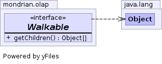

JavaScript is disabled on your browser.
Overview
Package
Class
Tree
Deprecated
Index
Help
Prev Class
Next Class
Frames
No Frames
All Classes
Summary:
Nested |
Field |
Constr |
Method
Detail:
Field |
Constr |
Method
mondrian.olap
Interface Walkable
All Known Implementing Classes:
CellProperty
,
DimensionExpr
,
DrillThrough
,
ExpBase
,
Explain
,
Formula
,
HierarchyExpr
,
Id
,
LevelExpr
,
Literal
,
MemberExpr
,
MemberProperty
,
NamedSetExpr
,
ParameterExpr
,
Query
,
QueryAxis
,
QueryPart
,
ResolvedFunCall
,
UnresolvedFunCall
interface
Walkable
An object which implements
Walkable
can be tree-walked by
Walker
.

Method Summary
Methods
Modifier and Type
Method and Description
Object
[]
getChildren
()
Returns an array of the object's children.
Method Detail
getChildren
Object
[]
getChildren
()
Returns an array of the object's children. Those which are not
Walkable
are ignored.
Overview
Package
Class
Tree
Deprecated
Index
Help
Prev Class
Next Class
Frames
No Frames
All Classes
Summary:
Nested |
Field |
Constr |
Method
Detail:
Field |
Constr |
Method